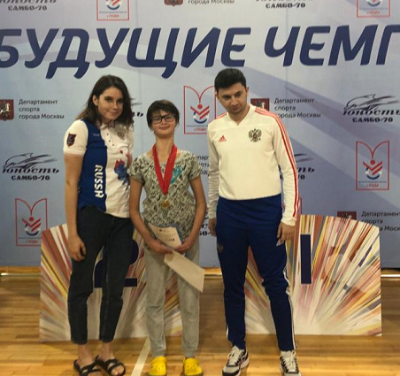

| |
Спортивно-адаптивная школа "Юность Москвы" равных возможностей. |
Отделение - плавание. |
О школе |
Новости |
Набор |
Тренерский состав |
Достижения |
Нормативы |
Контакты |
|
30 ЯНВАРЯ 2020 ГОДА - СПОРТСМЕНЫ НАШЕЙ ШКОЛЫ УЧАСТВОВАЛИ В КОНКУРСЕ РОССИЙСКОГО БРЕНД CASUAL И СПОРТИВНОЙ ОДЕЖДЫ "ЗАСПОРТ". C 2012 года компания разрабатывает и производит форму для российских спортивных команд, федераций и корпораций, а с 2017 года ZASPORT — официальный экипировщик Олимпийской команды России. Олимпийская экипировка для сборной России разрабатывается с учетом пожеланий спортсменов и с соблюдением всех требований регламента Олимпийского комитета России и Международного Олимпийского комитета. Наша команда стала победителем конкурса и выиграла игрушки - талисманы сборной России на Олимпиаде 2020 в Токио! Поздравляем спортсменов с победой! Мы за спорт! 
15-22 ЯНВАРЯ 2020 ГОДА - ЧЕМПИОНАТ РОССИИ ПО ПЛАВАНИЮ СРЕДИ СПОРТСМЕНОВ С ПОРАЖЕНИЕМ ОПОРНО-ДВИГАТЕЛЬНОГО АППАРАТА В Дзержинске (Нижегородская область) с 17 по 21 января проходил чемпионат России по плаванию среди лиц с поражением опорно-двигательного аппарата (ПОДА) и с нарушением зрения (спорт слепых), где приняли участие восемь воспитанников спортивно-адаптивной школы «Юность Москвы» равных возможностей и одна представительница спортивной школы олимпийского резерва "Юность Москвы" по плаванию. Спортсмены нашего спортивного объединения завоевали 33 медали, среди которых 23 – высшего достоинства. Диодорова Анастасия: 1 место - 50м батт.; 1 место - 100м н/сп; 1 место - 4х50м в/ст; 1 место - 4х50 компл.; 1 место - 4х100м компл; 2 место – 50м в/ст. Иванова Софья: 1 место -4х100м компл.; 2 место – 400 м в/ст. Кужев Ахмед: 1 место – 4х100м компл. Мустафин Тимур: 1 место – 4х100м компл.; 2 место – 100м батт. Павлова Мария: 1 место – 100м брасс. Гражданова Ирина: 1 место – 4х100м в/ст; 2 место – 50м в/ст; 2 место – 10 м батт. Поздравляем спортсменов и главного тренера Степанову Наталью Викторовну! 

С НАСТУПИВШИМ 2020 ГОДОМ! ЖЕЛАЕМ НОВЫХ ПОБЕД И ЛИЧНЫХ ДОСТИЖЕНИЙ НАШИМ СПОРТСМЕНАМ!17 ДЕКАБРЯ 2019 ГОДА НАША ШКОЛА УЧАСТВОВАЛА В ТУРНИРЕ «САМБО-70» ПО ПЛАВАНИЮ СРЕДИ СПОРТСМЕНОВ С ОГРАНИЧЕННЫМИ ВОЗМОЖНОСТЯМИ ЗДОРОВЬЯ В Москве, на базе спортивной школы Самбо 70, 17 декабря проходили соревнования между школами Москвы среди лиц с поражением опорно-двигательного аппарата (ПОДА), где приняли участие семь воспитанников спортивно-адаптивной школы «Юность Москвы» равных возможностей. Спортсмены нашего спортивного объединения завоевали 14 медалей, среди которых 10 – высшего достоинства. Степанова Василиса: 1 место – 100м брасс; 1 место – 200м комплекс Трусов Георгий: 2 место – 100м н/сп; 1 место – 100м брасс. Феоктистова Ирина: 1 место – 100м брасс; 1 место – 200м комплекс Аюбова Сабрина: 1 место – 100м н/сп; 3 место – 100м брасс. Камушкина Наталья: 1 место – 50м в/ст; 2 место – 100м брасс. Метелев Филипп: 1 место – 50м в/ст; 1 место – 200м комплекс. Мариишин Серафим: 2 место – 50м в/ст; 1 место – 100м н/сп Поздравляем спортсменов и их тренера Короткова Леонида Игоревича! 


07-08 ДЕКАБРЯ 2019 ГОДА СОСТОЯЛИСЬ ГОРОДСКИЕ СОРЕВНОВАНИЯ ПО ПЛАВАНИЮ ДЛЯ ЛИЦ С ОВЗ «ОТКРЫТЫЙ КУБОК ОЛЕСИ ВЛАДЫКИНОЙ» С 6 по 9 декабря в столичном плавательном бассейне УСЦ «Труд» состоялись городские соревнования по плаванию для лиц с ограниченными возможностями здоровья (ОВЗ) «Открытый Кубок Олеси Владыкиной». Организацию и проведение мероприятия, целью которого является развитие и популяризация спортивного плавания по Паралимпийской и Сурдлимпийской программам, осуществляет Москомспорт и ФСО «Юность Москвы». Воспитанники спортивно-адаптивной школы «Юность Москвы» равных возможностей приняли самое активное участие в соревнованиях. Победу на своих дистанциях одержали: Павлова Мария, Кужев Ахмед, Карпова Мария, Денисов Мирон, Журавлев Игорь, Мартыненко Денис, Левашова Ксения, Фомин Мартин, Елизаров Павел, Танян Дарья, Муратов Фернандо, Вебер Арсений. Серебряными призёрами соревнований стали: Юдина Дарья, Смирнов Александр, Танян Дарья, Сарыкин Илья, Тургенева Елизавета, Лавров Роман, Куликова Екатерина, Залюбовин Денис, Сумская Лиана, Елизаров Павел, Степанова Василиса, Вейс Кристина, Карпова Мария, Левашова Ксения, Понятовский Владимир, Шмелев Михаил. «Бронзу» турнира записали в свой актив: Кужев Ахмед, Малькова Наталья, Муратов Фернандо, Вебер Артур, Понятовский Владимир, Тулякова Карина, Денисов Мирон, Тургенева Елизавета, Лавров Роман, Вейс Кристина, Седых Георгий. Поздравляем спортсменов и весь тренерский коллектив с отличными результатами! 


04-07 ДЕКАБРЯ 2019 В ГОДА РАМЕНСКОЕ МОСКОВСКОЙ ОБЛАСТИ ПРОШЕЛ КУБОК РОССИИ ПО ПЛАВАНИЮ СРЕДИ ЛИЦ С ПОРАЖЕНИЕМ ОПОРНО-ДВИГАТЕЛЬНОГО АППАРАТА. 10 НОЯБРЯ 2019 ГОДА МОСКОВСКАЯ ФЕДЕРАЦИЯ СПОРТА ЛИЦ С ПОДА ПРИ ПОДДЕРЖКЕ МОСКОМСПОРТА И ПКР ПРОВЕЛИ ГОРОДСКИЕ СОРЕВНОВАНИЯ ПО ПЛАВАНИЮ ДЛЯ ДЕТЕЙ С ПОРАЖЕНИЕМ ОДА «БУДУЩИЕ ЧЕМПИОНЫ» На базе плавательного бассейна "Юность" ГБОУ "Центр спорта и образования "Самбо-70" Москомспорта, Московская региональная общественная организация «Федерация спорта лиц с поражением опорно-двигательного аппарата» при поддержке Департамента спорта города Москвы и Паралимпийского комитета России провела Городские соревнования по плаванию для детей с поражением опорно-двигательного аппарата «Будущие чемпионы». На старт турнира вышли 110 молодых пловцов - спортсменов из 5 московских спортивных школ. В турнире приняли участие более 100 детей в возрасте от 7 до 16 лет. Спортсмены состязались на дистанциях 50 и 100 метров вольным стилем, брассом и на спине. Спортсмены нашего спортивного объединения завоевали 14 медалей, среди которых 8 – высшего достоинства. Поздравляем наших спортсменом с заслуженными наградами: Феоктистова Ирина: 1 место – 50м в/ст; 1 место – 100м брасс; 1 место – 100м н/сп; 1 место – 100м в/ст. Аюбова Сабрина: 2 место – 50м в/ст; 1 место – 100м н/сп; 2 место – 100м в/ст. Елизаров Павел: 2 место – 50м в/ст; 2 место – 100м н/сп; 1 место – 100м в/ст. Трусов Георгий: 3 место – 50м в/ст; 1 место – 100м н/сп; 1 место – 100м в/ст. Мариишин Серафим: 1 место – 100м н/сп Поздравляем спортсменов и их тренера Короткова Леонида Игоревича! 


05-16 СЕНТЯБРЯ 2019 ГОДА ЧЕМПИОНАТ МИРА ВЕЛИКОБРИТАНИЯ В Лондоне с 9 по 15 сентября прошёл чемпионат мира по плаванию (спорт слепых и спортсменов с поражением опорно-двигательного аппарата) под эгидой Международного паралимпийского комитета. Российская сборная завоевала 18 золотых, 15 серебряных и 21 бронзовую медали. Четыре «бронзы» чемпионата мира завоевали пловцы спортивно-адаптивной школы «Юность Москвы» равных возможностей: Анастасия Диодорова – женская эстафета 4 по 50 метров вольным стилем, Мария Павлова – 100 метров брассом. Поздравляем главного тренера Степанову Наталью Викторовну! 12-20 ИЮЛЯ 2019 ГОДА СОСТОЯЛАСЬ III ВСЕРОССИЙСКАЯ ЛЕТНЯЯ СПАРТАКИАДА ИНВАЛИДОВ В ЙОШКАР-ОЛЕ (РЕСПУБЛИКА МАРИЙ ЭЛ) С 12 по 20 июля в Йошкар-Оле (Республика Марий Эл) прошла III Всероссийская летняя Спартакиада инвалидов. В соревнованиях приняли участие спортсмены с поражением опорно-двигательного аппарата, нарушением интеллекта, зрения и слуха в возрасте от 14 до 18 лет. В дисциплине плавание в составе спортивной сборной команды города Москвы участие принимал спортсмен нашей школы (Юность Москвы равные возможности) - Максим Лысенко. Главным тренером сборной Москвы по плаванию на соревнованиях выступал тренер нашей школы Коротков Леонид Игоревич! Поздравляем сборную Москвы и нашего тренера с успешным выступлением и победой сборной!
|